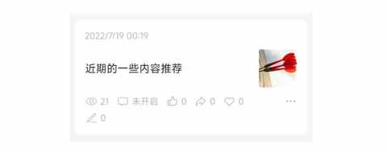
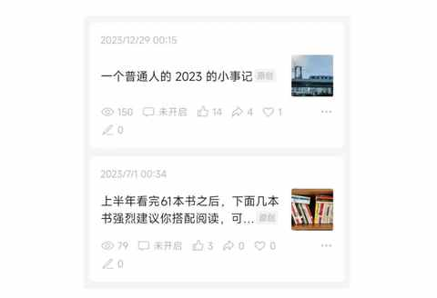
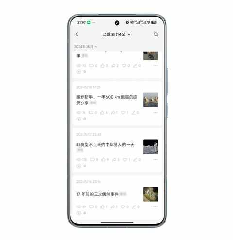
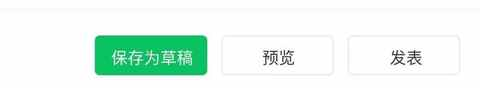
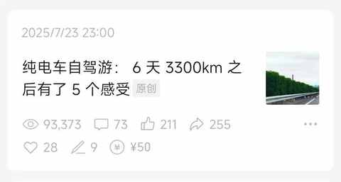
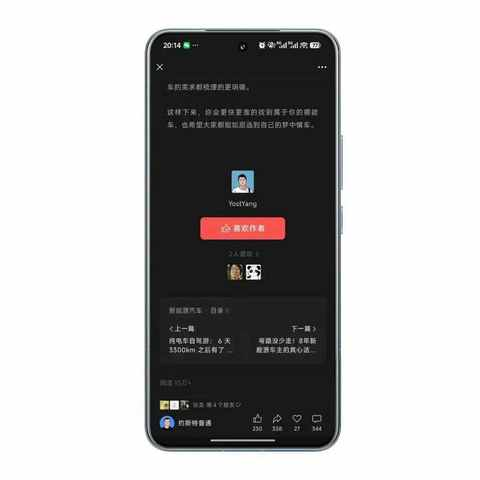
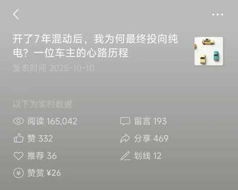
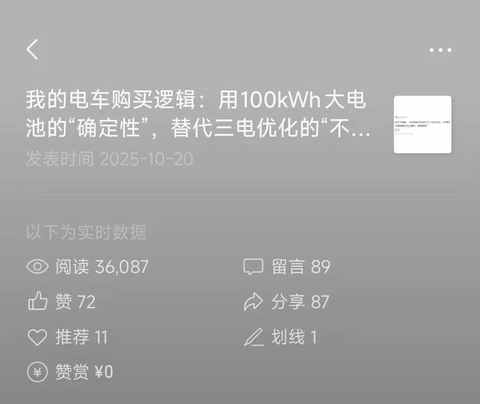
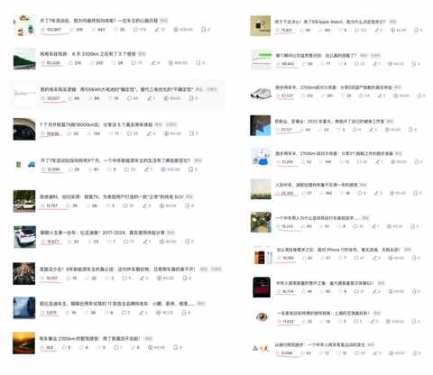

一个中年男人的140次发文，换来第一篇的10万+
一、中年男人，要有表达欲
准确点说是，一个年过 35 岁的普通中年男人决定要重拾表达欲！
如果要说谁最懂中年男人，那必然是中年男人自己以及和他年龄相仿状态类似的中年男人们。而中年男人这个群体在35+的年纪，往往又是表达欲逐步坠入低谷的时期。
我的情况就更特殊了：一不抽烟，二很少喝酒，三又是居家办公。
每天接触频次最高的是小区里面的快递员，遇到熟悉的快递员会互相打个招呼，有时候坐电梯碰到还会尬聊几句。
本来活动就很范围还没有同事之类的，同时还没有特别的兴趣爱好，会导致表达欲一降再降。
有一天突然想起来是有申请过一个公众号的，而且只尝试性的发过一篇文章。

脑子里面不由自主的付出一个想法：何不试试写文章，然后发出来。
试试就试试！

2023年全年是发布了两篇，一篇是阅读分享，一篇是2023 年的年度总结。
在 2024 年的 5 月中旬开始了21 天的连续日更打卡。

在一年多后的当下已经想不起来因为什么事情或情绪让我突然开始 21 天日更公众号的，但依然记得当时那个时期的一个朴素的想法：
要 做一个有表达欲的普通中年！
二、写文章，并不容易
一个没有做过的事情，从陌生到熟悉有一个过程，这个过程并不容易。
1️⃣ 写文章不是写作文
自从儿子小学二年级开始有诸如写周记、写作文、看图写话的作业的时候，我上学时候关于作文的记忆便浮现出来一些。
尤其忘不了的是，2007 年安徽高考作文题是一篇命题作文，题目是《提篮春光看妈妈》，不知道是哪位命题老师的“杰作”，简直是艺术品。
我当然是忘记写了什么了，只记得我字数是凑够了的，到现在我都佩服自己居然把字数凑上了，那可是 800 字啊，而且还是在紧张的高考考场上。
我想说的是：写文章不是写作文，主题和内容都由自己来定。
但有了极大的自由度之后呢，往往开始的更难了。
从选题到标题，从标题到开头，从开头再到主体内容，再到结尾。
最终，还需要点击【发表】按钮，仪式感满满！

2️⃣ 每个人需要的量的不同
如果想熟练掌握某个技能，需要练习，而这个练习的量每个人都不一样。
用考驾照作为例子再合适不过。
每个人对自己考驾照的过程都能有几件事情是能说道说道：
- 学费多少
- 教练的特点
- 各地的考试规则
- 考场见闻
- 关键科目考了几次
- 多久拿到的驾照
- ……
不管花了多少钱、经历多长时间、考几次试，最终大家都拿到了驾照。驾照是最终的结果大家都一样，但每个人的过程都不太一样。
这个道理放在写文章上面也一样：前途是光明的，道路是曲折的！
坚持写，坚持发布出去，总有那一天突然就觉得写的流畅了，点击【发表】按钮的时候也信心十足了。
三、第一篇 10 万+
刚开始写公众号的时候，完全没有想过 10万+之类的，认为这些离自己很遥远也不是自己的初心所向。
不过，在发布的文章变多之后，逐步有了一些推荐流量心态和想法自然都有了变化，会想到某一天某篇文章突然 10 万+。
1️⃣ 10万+虽迟但到
起初以为一定是这篇暑期短时间自驾游之后写的文章，当时写这篇文章的时候花了很多时间总结和这次纯电车自驾游的感受。
纯电车自驾游： 6 天 3300km 之后有了 5 个感受

比较意外的是等文章阅读量到接近 9万的时候逐渐没有了推荐流量，到现在已经过去三个月依然没有达到 10 万+。
好在，该来的总会来，因为我一直在更新。
从 8 月 31 日开始便一直在日更，即使是在国庆节的 8 天假期也没有停止更新！
开了7年混动后，我为何最终投向纯电？一位车主的心路历程
在周二的下午，这篇讲自己换车心路历程的文章过了 10万+，而这篇文章距离发布已经过去 11 天，至少 7万阅读量是上周末突然来的。

同时，也十分有可能现在是买车的旺季，大家关于换车和用车的需求旺盛了起来，这篇文章最终的阅读量可能会超过 20万。

老实说，并没有太兴奋的感觉，只是当天在微信群里面发了一个小小的红包，同时也把截图发朋友圈。
如果是 25 岁写了一篇突然 10 万+了，我肯定会把很多微信群发红包，会发好几条朋友圈，还有朋友们都按个私聊一遍！
2️⃣ 留言区是宝藏
一个情况是从未想过的：
在某个时间段，留言看不过来，更回复不过来。
其中难免有一些留言是：情绪化的、有攻击性的、秀优越感的、莫名其妙的、毫无逻辑的……
但更多的留言都是真诚表达自己的想法的，是想认真探讨问题的，是讲逻辑的。
由此，我也受到留言区的启发延伸出来一篇关于选车的文章：
我的电车购买逻辑：用100kWh大电池的“确定性”，替代三电优化的“不确定性”

只要尽量避免情绪化，保持一个平和的心态，留言区便是大大的宝藏！
四、继续写，继续发
本着真实体验和真诚分享的原则，已经发布 140 篇文章，接下来依然会秉持这一原则来进行。
不追热点，从个人真实的视角和真实的生活出发。
1️⃣ 思路逐步清晰
文章发布量到 100 篇之后，数据就有参考意义了许多，目前有 18 篇文章过万阅读，其中有 8 篇是关于新能源车。

这些数据告诉我的是：
当我分享这些内容，大概率能获得好的反馈，也能给更多人提供一个参考。
2️⃣ 菜就要练
最近有一些留言说我是广告，这说明我进步了，但是表达方式引起了误会，毕竟真的不是广告内容。
最难绷的是说我是 ai 文的，我除了标题会让 ai 辅助提供下思路，配图有时候让 ai 生成之外，其他地方都是在键盘上一个个敲击出来的。
得继续做针对性的练习，也要找一找被误解的原因。
近期文章
为什么说放弃Apple Watch很容易，而真正考验人的是下一块智能手表的选择？
运动后总酸痛？这4个家常小物件，是放松肌肉的“隐形神器”
我的电车购买逻辑：用100kWh大电池的“确定性”，替代三电优化的“不确定性”
从前，有一个笨小孩，他的武器叫“笨功夫”
中年人提高跑量的意外之喜：最大摄氧量首次突破62！
告别选择困难症！翻遍留言区整理的宝藏跑步装备清单！
一双 “问题” 跑鞋带来的顿悟：问题的答案藏在细节里……
没想到送老婆去面试，居然是一次 “班味” 之旅
开了7年混动后投向纯电9个月，一个中年新能源车主的生活有了哪些新变化？
车型太多，普通人怎么选新能源车？分享一个更符合普通人的选车方法！